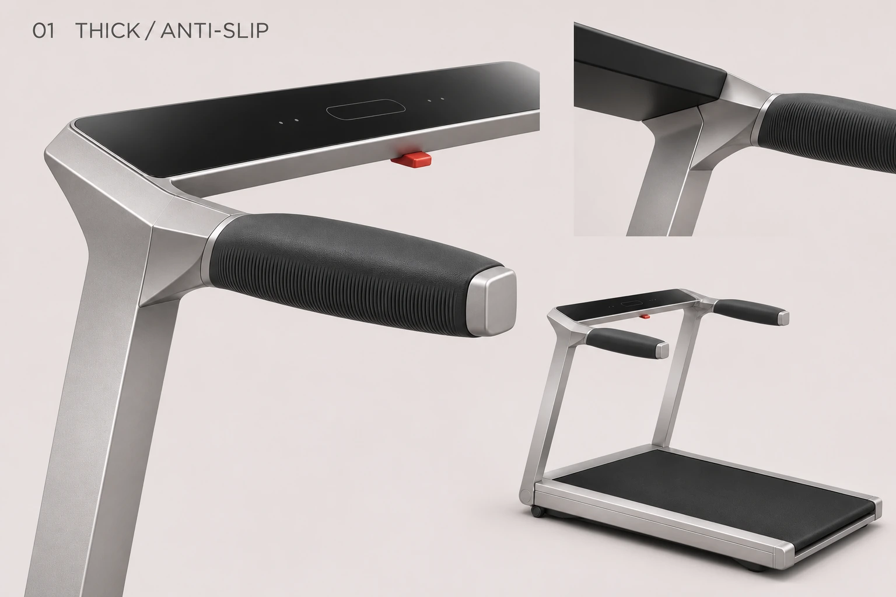
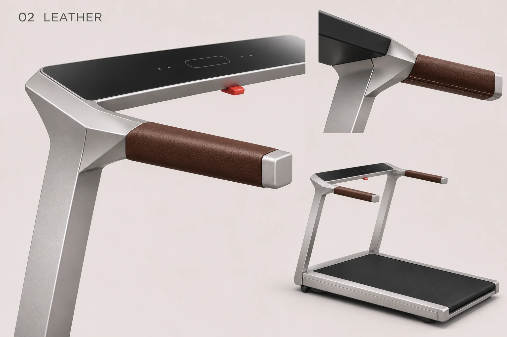

凌序 · 四种客制化把手
延续刚才的拐角设计，统一用折面肩部展示四款握持段。比较粗细、触感和功能，不代表已经选定某一款拐角。
01 · 粗防滑把手
握持段加厚，侧面和下缘细密纹路强化防滑的视觉与触感方向。

02 · 皮质把手
棕色细纹皮质包覆，缝线收于内下侧，延续银色端盖。

03 · 浅纹理硅胶握把（旧图待修正）
用户澄清：“扁平”指花纹起伏浅。应保持既有握把截面与体量，采用细密浅起伏交叉纹。下图误做成宽平掌托，作为误读旧稿保留，尚未重绘。

04 · 心率监测把手
齐平金属电极融入黑色握持段，辅助角度展示下侧接触面。